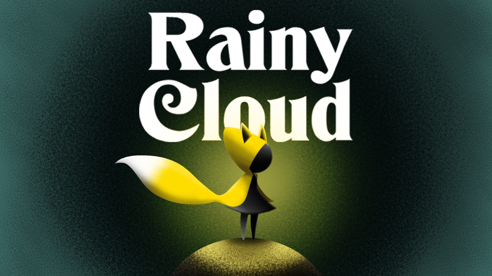

HOPE / 01
01 · GAME / UNITY
Impasse
A 2D isometric puzzle-action game about friendship, coordination, and hope. Winner of the Isfahan University Game Dev Camp Final Jam.
Unity game developer · Isfahan / Everywhere
I’m an indie game programmer and software engineer creating Unity and C# games, generative art, and playful interactive systems.
A practice in curiosity
From a single line of code to a whole universe of rules, I look for the point where engineering becomes expression. My work lives between games, systems, and art.
Unity games, software tools & generative art
01 · GAME / UNITY
A 2D isometric puzzle-action game about friendship, coordination, and hope. Winner of the Isfahan University Game Dev Camp Final Jam.
02 · GAME JAM / ARCADE
A bullet-hell survival game compressed into 100 seconds of escalating mayhem. Seven days, four creators, one endless swarm.
03 · GENERATIVE ART / FXHASH
Two thousand unique planets generated from layers of noise, code, and a little cosmic patience. An interactive NFT collection on Tezos.
04 · SIMULATION / UNITY ECS
A gravity simulation designed with Unity ECS, exploring orbital motion, forces, and interactive systems in C#.

PUZZLE / 05 · RAINY CLOUD05 · GAME / PUZZLE
A 2D puzzle game about a little girl and a magical fox escaping a flood by building a boat.
06 · UNITY PACKAGE / C#
A reusable software toolkit exploring concurrent workflows and practical utilities for game development.
07 · UNITY PACKAGE / UI
A focused Unity UI package for composing menu views and navigation flows with less repeated setup.
08 · SOFTWARE / NETWORKING
A software experiment around portals, routing, and the space between connected systems.
09 · SOFTWARE / NETWORKING
A lightweight utility for configuring and tuning proxy connections during network experiments.
10 · WEB APP / SOFTWARE
A straightforward meeting application experiment for scheduling and joining online sessions.
11 · TELEGRAM BOT / AUTOMATION
A Telegram bot experiment for handling 7z archive workflows through a chat interface.
12 · NETWORKING / HTTP
A lightweight networking tool for routing HTTP traffic through a tunnel.
13 · TELEGRAM BOT / AUTOMATION
A Telegram automation bot experiment for working with Instagram content.
14 · TELEGRAM BOT / AUTOMATION
A Telegram automation bot experiment for working with YouTube content.
More experiments, tools, and playable worlds
A little context
I’m an indie game developer, software engineer, and generative artist with a deep passion for storytelling, creativity, and innovation.
My journey has taken me from game jams and award-winning prototypes to procedural art and research. I specialize in Unity and C#, while constantly exploring the space where code can make people feel something.
I hold a Master’s degree in Computer Software Engineering, and my focus is game development. My most recent role was as a game project manager, keeping teams and builds on track from prototype to ship.